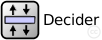

This documentation is released under the Creative Commons license
This documentation is released under the Creative Commons licenseThis module decides if we are going to use the active or passive mode. We will use two variables, passive and emitter, to take the decision.
In emitter module ON, we have to send packets in the direction of stats module towards the network. When emitter module is OFF, We are the receiver module, so we receive packet and send reply.
In the passive mode, every packet that we receive from the statistics module will be discarded. It only lets the flow between stats and the host connected to our emitter module. If the passive mode is off, it would be the opposite way: only packets from statistics module and not from the host.
| Name | Type | Description |
|---|---|---|
| Receiver | compound module |
This module receives the information and make the right calculations to obtain the end-to-end delay and jitter. |
| Trasmitter | compound module |
This module is the generator of traffic. It takes the time when the packet was created and the moment when it arrives to the module. This data is attached in the packet. |
| Name | Type | Default value | Description |
|---|---|---|---|
| emitter | int |
1 emitter, 0 receiver |
|
| passive | int |
1 passive, 0 active |
| Name | Value | Description |
|---|---|---|
| display | i=block/layer |
| Name | Direction | Size | Description |
|---|---|---|---|
| ethg [ ] | inout |
// // This module decides if we are going to use the active or passive mode. We // will use two variables, passive and emitter, to take the decision. // // In emitter module ON, we have to send packets in the direction of stats // module towards the network. When emitter module is OFF, We are the receiver // module, so we receive packet and send reply. // // In the passive mode, every packet that we receive from the statistics module // will be discarded. It only lets the flow between stats and the host // connected to our emitter module. If the passive mode is off, it would // be the opposite way: only packets from statistics module and not from the // host. // simple Decider { parameters: int emitter; // 1 emitter, 0 receiver int passive; // 1 passive, 0 active @display("i=block/layer"); gates: inout ethg[] @labels(EtherFrame-conn); }
This documentation is released under the Creative Commons license